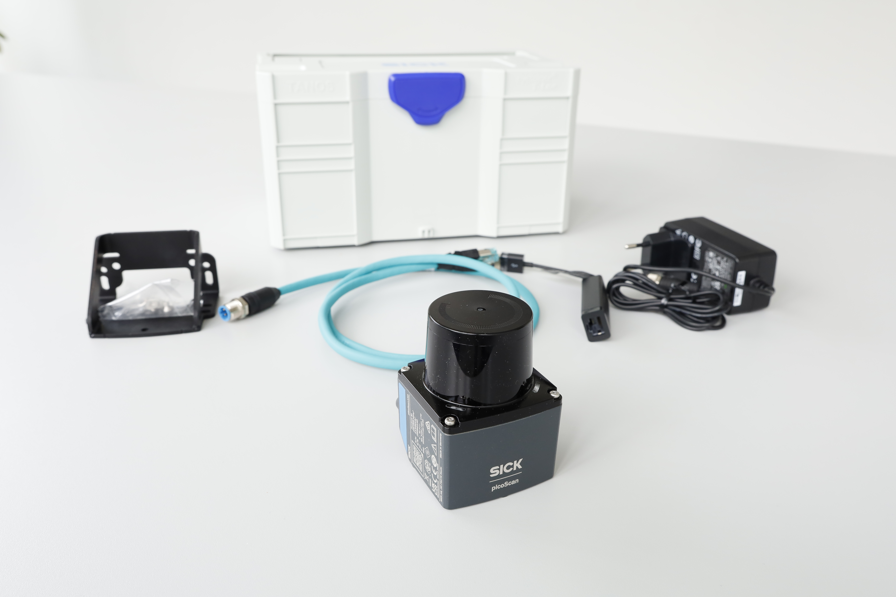

LiDAR Starter Kit Overview
The LiDAR Starter Kit provides an introduction to working with LiDAR sensors. It includes tools, documentation, and examples to help you get started quickly.

Hardware
The Vision Starter Kit contains of the following parts:
- PicoScan
- Mounting Plate
- Power Supply
- Network Cable
- Network Adapter
- Transport Box
Key Features
- High-precision distance measurement.
- Wide field of view for object detection.
- Easy integration with various platforms.
Explore the other sections for detailed setup and advanced usage.